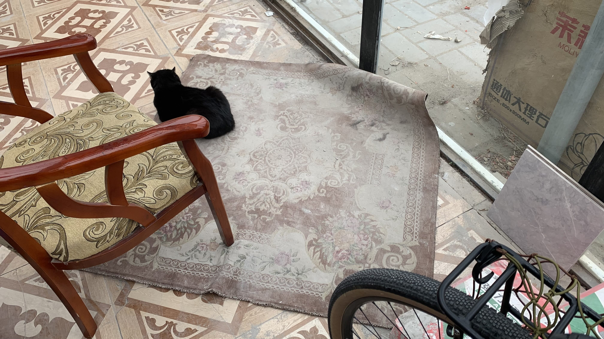
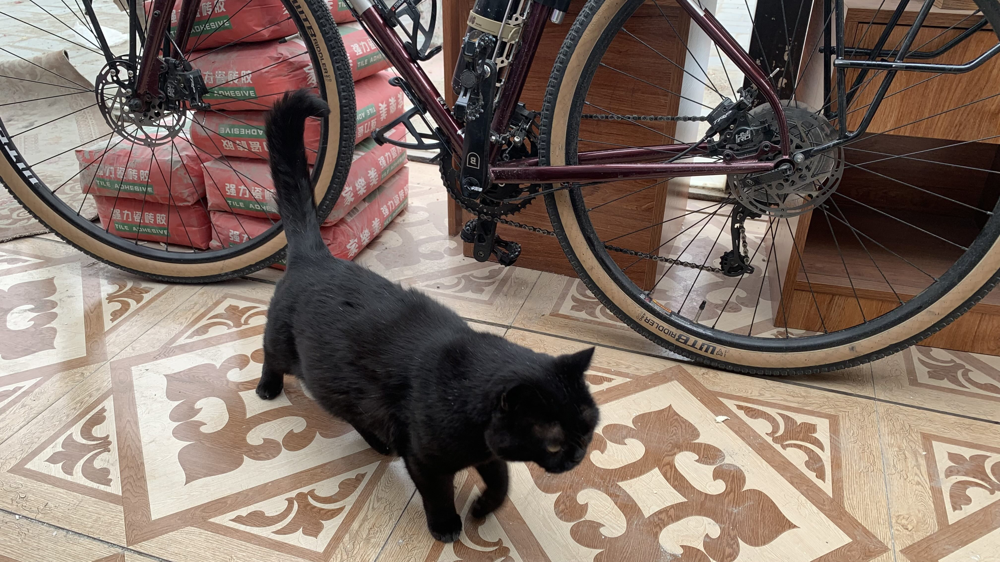
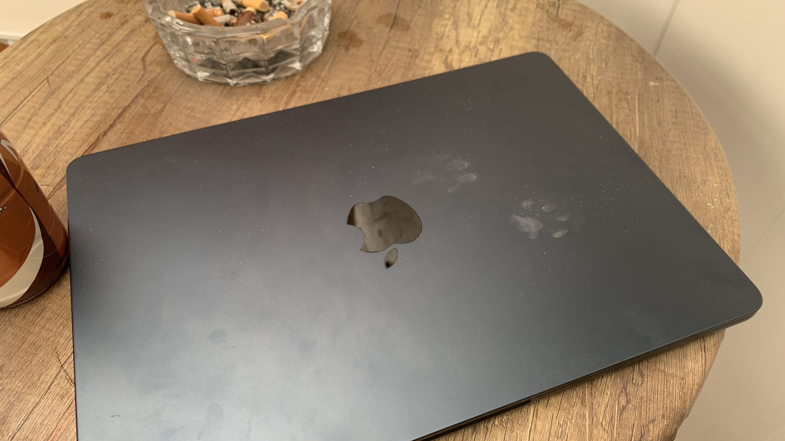
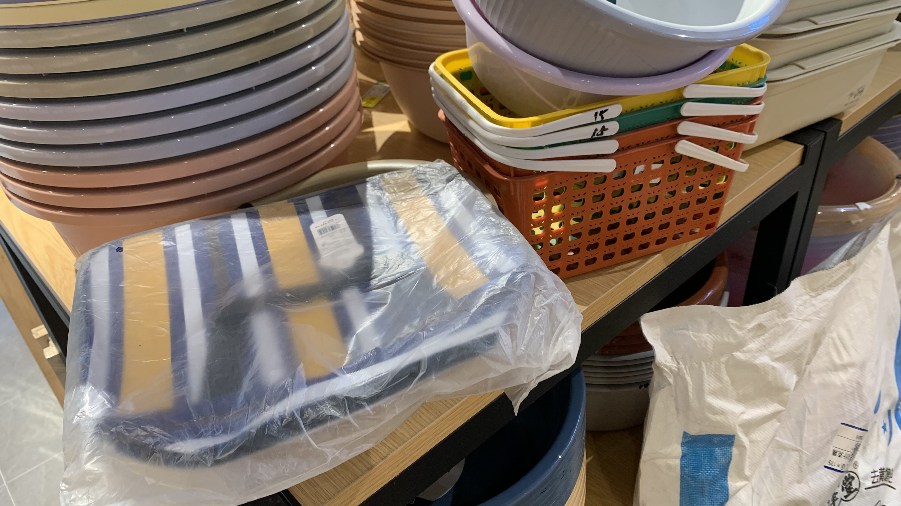
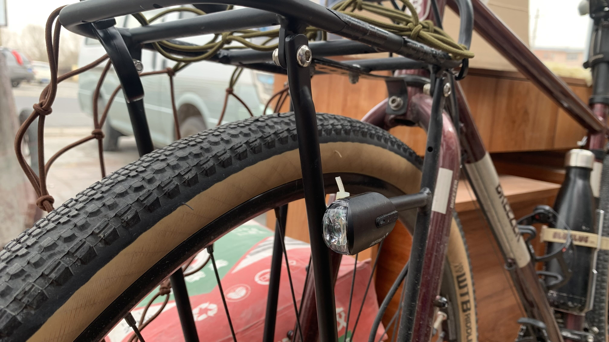
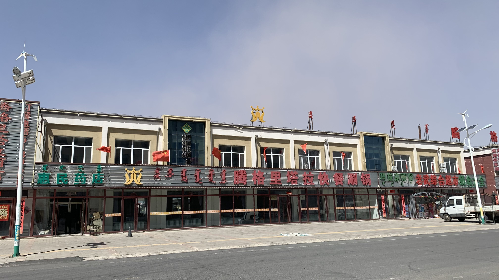
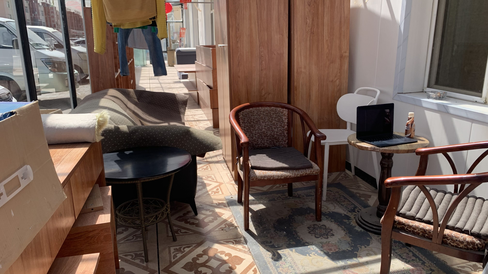
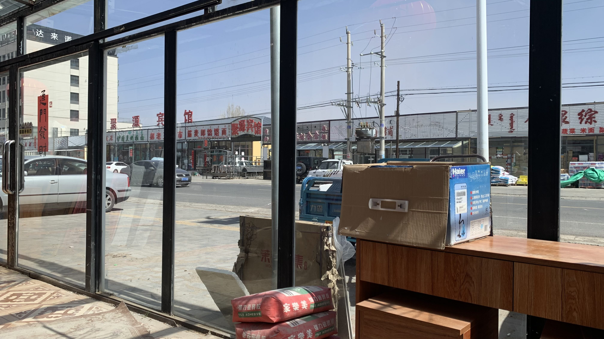
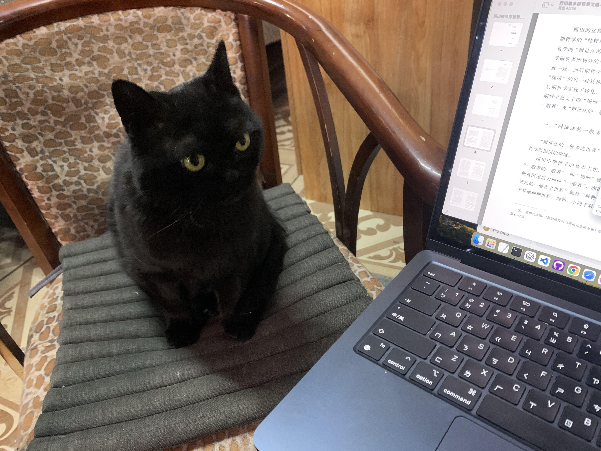
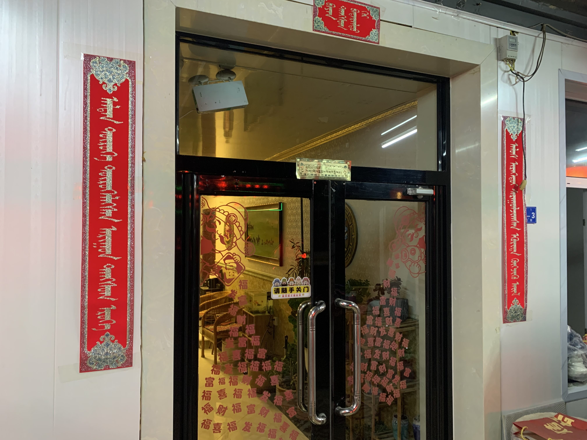

k-Day 049｜同道中人
04/19
早上出發時老闆已經和工人們忙整搬運新的木料，留下了房卡，將二十三號牽到門口。

幫車胎打氣後，老闆出來打了招呼。鬆了三天，今天要騎到錫林浩特。要是以後有機會一定會再來這裡住。

趁著這幾天休息，帶這電腦坐到日光棚下，準備日誌和照片整理好陸續上傳。咪咪在腳邊晃蕩。

不免俗地身為一隻貓，就必須踩踏桌上的筆電。螢幕留下一雙貓腳印。

休息時走到對面的超市買了一個方形帆布袋，拿來裝重物壓在前貨架上也許可以減少風阻和漂移的問題。

另外把備用的小前燈綁在貨架上，解決了晚上換燈的麻煩。至於把手，已經半放棄了。不知為何右邊把手鎖緊時總會跟著螺絲向下轉，就讓他待在他想待的地方吧。
04/20
今天的風比昨天更大，出們買食物時旗子已經呈現往上飛的狀態，不知道城鎮外的草原是什麼樣的光景。

日光棚的角落十分舒適，阻隔了外面的風沙，將純淨的太陽過濾出來。老闆說這些桌椅地毯原本是放在各個房間裡，現在重新裝修才堆在這裡。


只是外面沒有人，相對之下顯得更安穩。

咪咪似乎已經熟悉這裡坐著一個人，開始願意坐在旁邊看著。大風的時候能夠走進這家民宿十分幸運。明天似乎仍是大風，因此又續住了一天。
04/21
民宿主人是蒙族，門前的春聯寫的是蒙文。

問了老闆春聯上的意思，他說左邊是「光明照見未來永遠都是積極向上的家庭」，右邊是「踩在金馬鐙上的透明乾淨的家庭」，中間則是「富饒的家庭」。
為什麼是金馬鐙？老闆說象徵著原本與馬同高的人，已踏上馬鐙，視野迎向光明的未來。
漢族人不會有這樣的句子吧。老闆開始分享自己年輕時搭船從神戶港上岸，到京都交流的回憶。
一名蒙族高中生在1992年到京都，三十年後還會記得哪些事，我相當好奇。
當時有兩個寄宿家庭接待他，一對大學教授夫婦和一般的中產階級家庭。
大學教授的太太總是笑著，感覺上是大戶人家。家中的魚缸是全封上的，裡面有各種造景，四面看來都不一樣，庭院裡有植栽水塘，對於魚缸的精緻印象深刻。
當時連路邊賣牛奶冰淇淋的小販給的試吃紙杯，都讓他感覺不同。那種純粹的奶粉味，連哈根達斯都沒有那樣的好吃。
聽到一位蒙族人這麼說，實在相當驚訝。追問老闆，難道連蒙族自己的牛奶都沒那樣的純粹嗎？
老闆說蒙古人不會把牛奶做成冰淇淋，而那樣純粹的奶粉味，其它的冰淇淋也做不出來。
日本的食物很特別，確實會提煉出本質的味道，並將食材裝載在精緻的食器裡。
當時的新幹線已經有自動票閘，因此再搭船回到北京後，經過人工剪票口，坐著舊式電車，似乎帶來很大的衝擊。
在露天遮棚下，坐在舊式扶手椅上和咪咪一起聽老闆說著他的回憶，讓我想起在巴黎曬太陽的日子。
明天就要踏上金馬鐙繼續前進了，這裡是出發四十幾天，第一次待這麼多天的地方，整整三天都坐在這裡，我想我會懷念這個地方。
今日花費： 住宿 70元